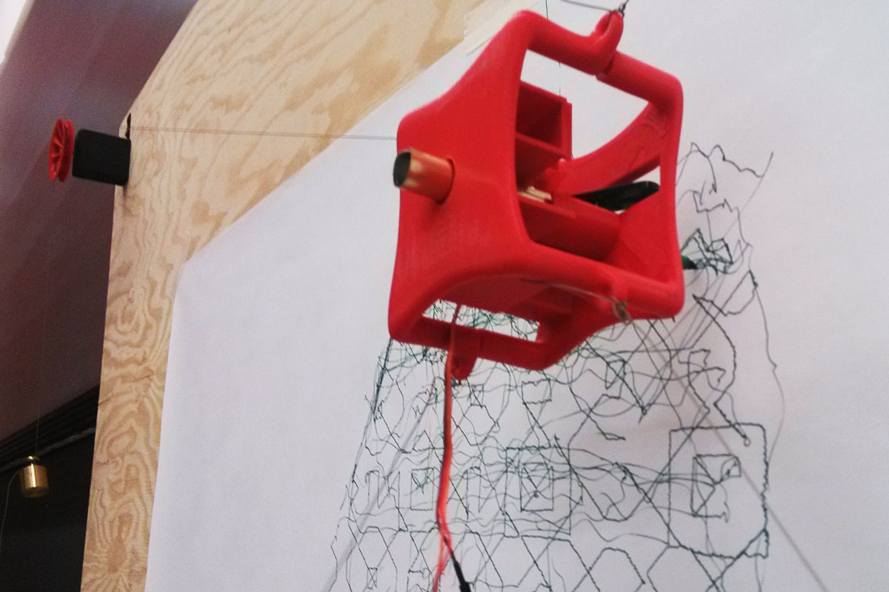
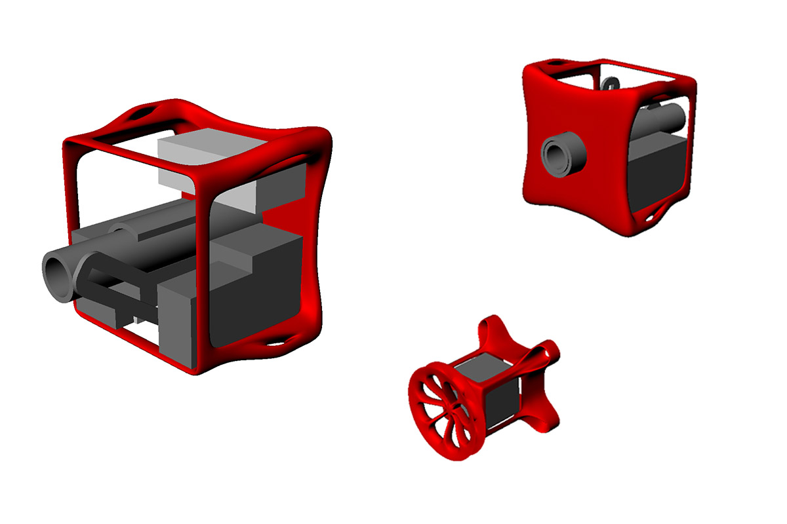
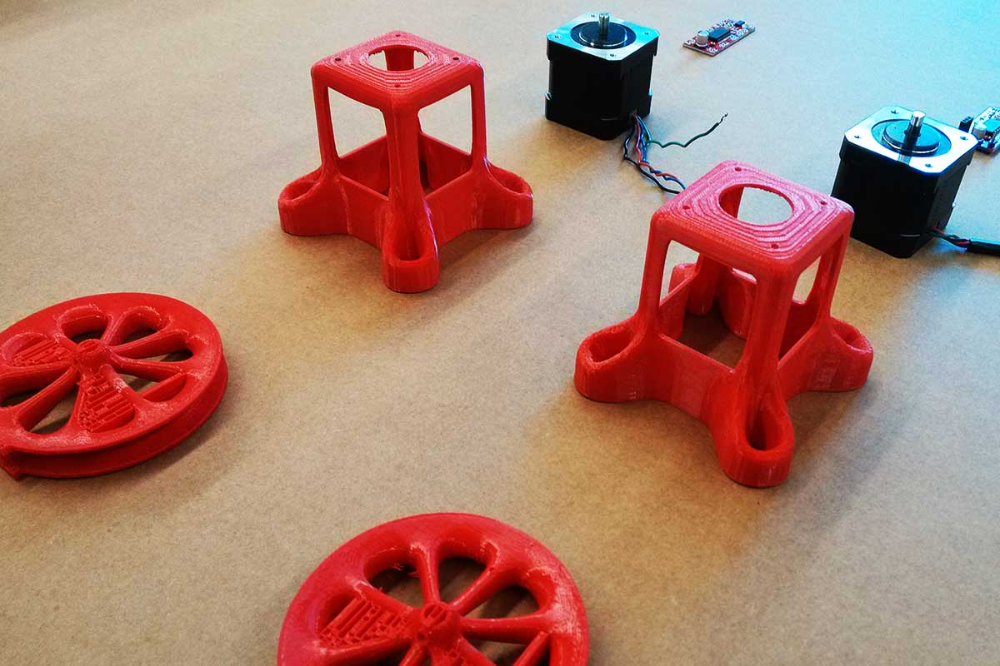
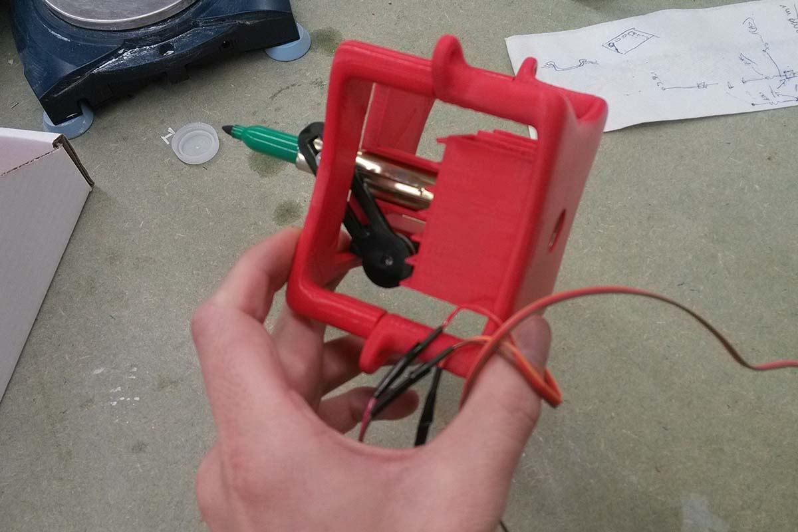
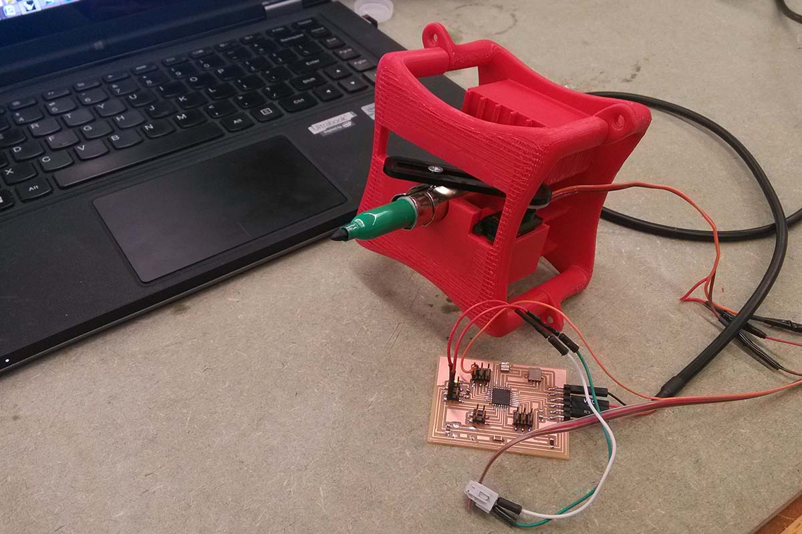
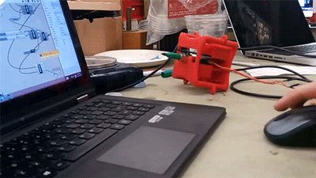
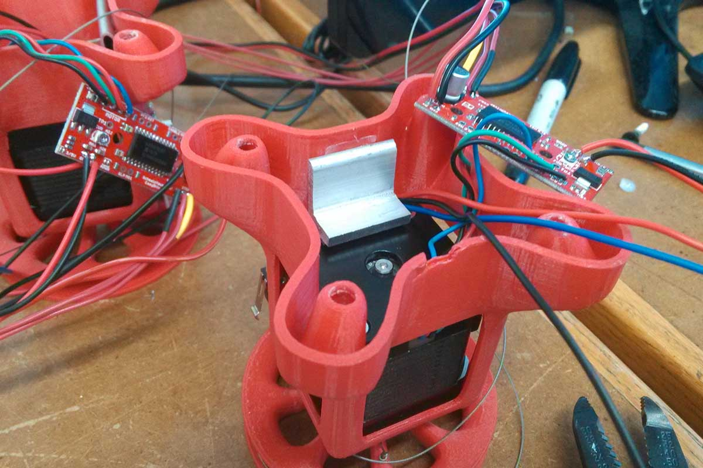
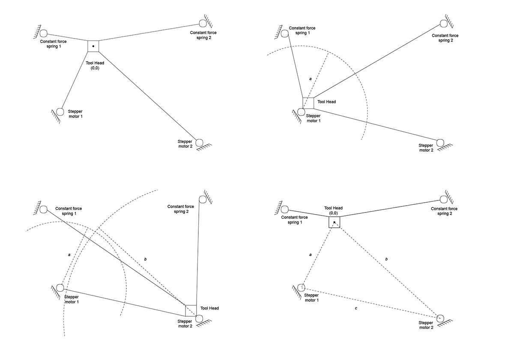
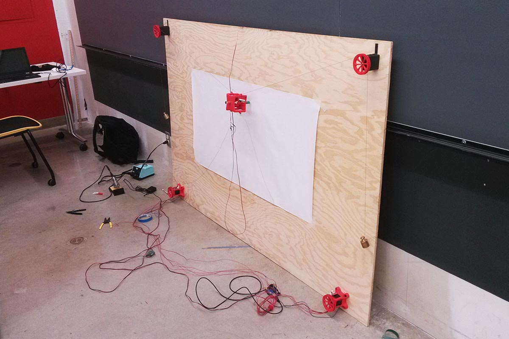
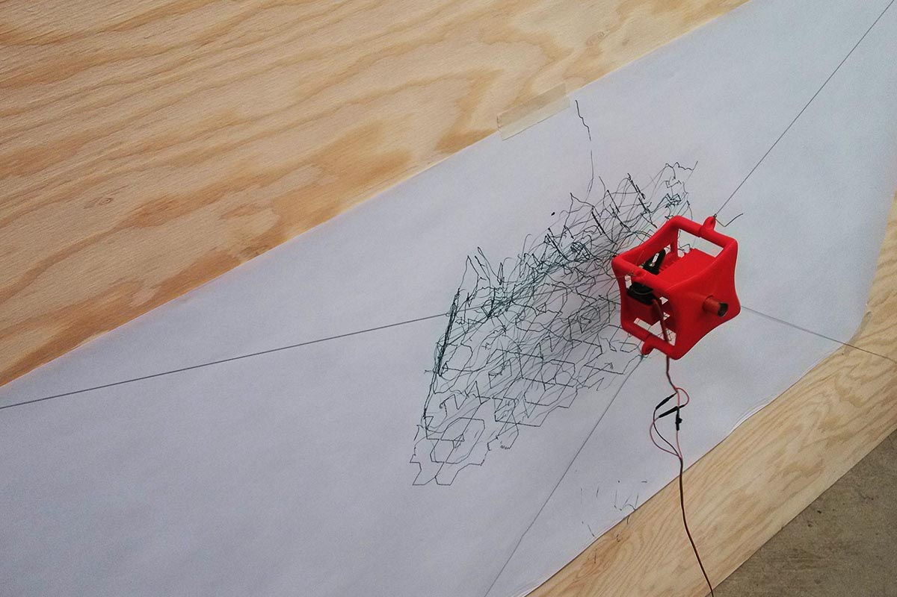

<div class="row">
  <div class="col-sm-12">
    <div id="carouselExampleControls" class="carousel slide" data-ride="carousel">
      <ol class="carousel-indicators">
        <li data-target="#carouselExampleControls" data-slide-to="0" class="active"></li>
        <li data-target="#carouselExampleControls" data-slide-to="1"></li>
        <li data-target="#carouselExampleControls" data-slide-to="2"></li>
        <li data-target="#carouselExampleControls" data-slide-to="3"></li>
        <li data-target="#carouselExampleControls" data-slide-to="4"></li>
        <li data-target="#carouselExampleControls" data-slide-to="5"></li>
        <li data-target="#carouselExampleControls" data-slide-to="6"></li>
        <li data-target="#carouselExampleControls" data-slide-to="7"></li>
        <li data-target="#carouselExampleControls" data-slide-to="8"></li>
        <li data-target="#carouselExampleControls" data-slide-to="9"></li>
      </ol>
      <div class="carousel-inner" role="listbox">
        <div class="carousel-item active">
          
        </div>
        <div class="carousel-item">
          
        </div>
        <div class="carousel-item">
          
        </div>
        <div class="carousel-item">
          
        </div>
        <div class="carousel-item">
          
        </div>
        <div class="carousel-item">
          
        </div>
        <div class="carousel-item">
          
        </div>
        <div class="carousel-item">
          
        </div>
        <div class="carousel-item">
          
        </div>
        <div class="carousel-item">
          
        </div>
      </div>
      <a class="carousel-control-prev" href="#carouselExampleControls" role="button" data-slide="prev">
        <span class="carousel-control-prev-icon" aria-hidden="true"></span>
        <span class="sr-only">Previous</span>
      </a>
      <a class="carousel-control-next" href="#carouselExampleControls" role="button" data-slide="next">
        <span class="carousel-control-next-icon" aria-hidden="true"></span>
        <span class="sr-only">Next</span>
      </a>
    </div>

    <div class="main-text hidden-xs">
      <div class="col-sm-12 projDesc">
        <h2>DEPLOYABLE WALL PLOTTER</h2> <br><br>
        <p>Harvard, 2016 <br> <br>
        This project is a portable, deployable wall plotter robot. My motivation for creating a cable-driven robot for this project is in part due to a perceived need in the field of architecture. If we consider the landscape of robotics as a whole, we could generalize that there is an inverse relationship between size of workspace and accuracy of the manipulator. Architecture, especially on-site construction involves a multitude of tasks not suitable to industrial arms because of their limited workspace. Furthermore, construction tolerances are rarely so high as to require industrial levels of precision. However, aerial robotics for construction is energy expensive and far from a viable option. I therefore see wire robots as a potentially successful middle ground. 
 <br> <br>
        <a href='../14_plotter/home'>Link</a> &nbsp;
        More Info: <a href='http://fab.cba.mit.edu/classes/863.14/people/nathan_melenbrink/Week_15.html'>How to Make [almost] Anything</a>

        </p>
     </div>
    </div>
  </div>
</div>